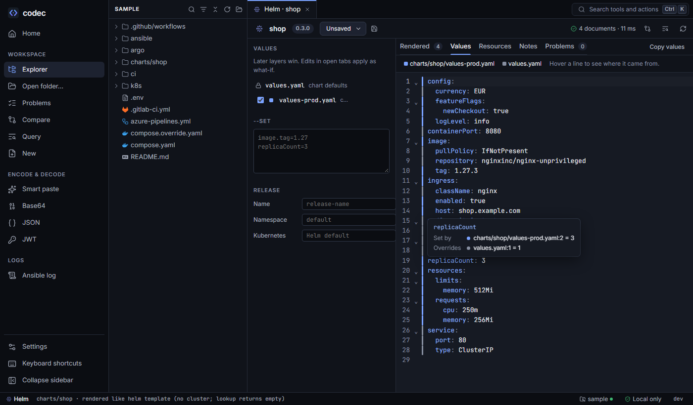

Helm
codec renders charts with the Helm 4 SDK built into the binary — byte for byte what helm template prints — without a helm install, a cluster or any download. Then it tells you where every value came from.

replicaCount is 3, set by values-prod.yaml line 2, overriding values.yaml line 1.Opening a chart#
Any folder with a Chart.yaml is a chart. Open its Helm view from:
- Render in the toolbar of any file inside the chart (templates, values,
Chart.yaml); - the palette: Ctrl K, then "Helm: render name";
- an Argo CD Application's Render this app, which opens the chart with the app's value files and parameters.
Choosing what to render#
The left panel holds everything helm template would take as flags:
| Setting | Equivalent | Notes |
|---|---|---|
| Values layers | -f a.yaml -f b.yaml | The chart's values.yaml is always first. Add other values files found near the chart, reorder them, or untick one to see the render without it. Later layers win. |
| --set | --set image.tag=1.27 | One per line, applied after the files, with Helm's --set syntax. |
| Release name, namespace | helm template NAME -n NS | Defaults: release-name, default. |
| Kubernetes version | --kube-version | For charts that branch on .Capabilities.KubeVersion. |
Every change re-renders within a fraction of a second. A typical chart renders in well under 100 ms.
Profiles#
Save the current layers, --set lines and release options as a named profile — "dev", "prod", "prod-eu" — and switch between them from the profile menu. Profiles are stored in your user settings, keyed by the chart's folder, never in the repository. Compare two profiles' renders in Compare. Forget old ones in Settings.
What-if edits#
If a template or values file of the chart is open with what-if edits, the render uses the edited text. The header counts the files involved. It is the quickest way to answer "what happens if I change this?" without touching the chart.
What you see#
Rendered#
The manifest exactly as helm template prints it, with a list of documents grouped by the template that produced them. Click one to jump to it; Copy all copies the whole manifest.
Values and provenance#
The final merged .Values. Hover any line to see which layer set it and every earlier layer it overrode. Provenance covers what Helm does quietly:
nullin a later file deleting a key;- subchart defaults, and values passed down to subcharts;
globalvalues;--setlines, shown as their own layer.
The same answer is available in the editor: hover .Values.replicaCount in a template and codec shows the value it rendered with and where it came from.
Resources#
The render seen as Kubernetes objects: cards, the relationship graph, an inventory of images and resources, and references that point nowhere. See Kubernetes.
Problems#
- Render errors mapped to the template file and line (
templates/deployment.yaml:21), with a click to open it there. - Values checks:
.Valuespaths a template uses unguarded that no layer sets, and defaults no template reads. - Lint and schema findings on the output, labelled with the object and traced back to the template. See Lint and schemas.
- A note where
lookupreturned nothing because there is no cluster.
On a first render, schemas may still be downloading. The render appears immediately and schema findings follow a moment later.
Argo and Notes#
If the chart renders Argo workflows, an Argo tab resolves them like the Argo view. Notes shows NOTES.txt rendered.
How rendering works#
The chart is loaded from memory, so what-if edits stand in for files and nothing is written anywhere.
Provenance is worked out by merging the layers one at a time and recording, for each path, the layer that last set it and the ones it replaced. Because it follows Helm's own coalescing, it agrees with the render.
Limits#
- Dependencies must be vendored. Subcharts need to be in the chart's
charts/folder, as folders or.tgzfiles. codec never runshelm dependency updateor downloads anything; a missing dependency is reported as a problem. lookupreturns empty, as inhelm template: there is no cluster.- Values files from outside the open folder can't be layered.
From the command line#
codec helm render ./charts/shop -f charts/shop/values-prod.yaml --set image.tag=1.27 # like helm template
codec helm values ./charts/shop -f charts/shop/values-prod.yaml --provenance
image: # ← charts/shop/values-prod.yaml:4 (overrides values.yaml:3)
pullPolicy: IfNotPresent # ← values.yaml:7
repository: nginxinc/nginx-unprivileged # ← values.yaml:4
tag: 1.27.3 # ← charts/shop/values-prod.yaml:5 (overrides values.yaml:6)
replicaCount: 3 # ← charts/shop/values-prod.yaml:2 (overrides values.yaml:1)